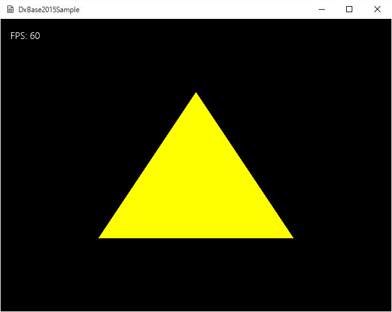

図Simple02a
今回は頂点を、3つだけ作成します。
void GameObject::Create(){
//頂点を作成するための配列
vector<VertexPosition> vertices = {
{ VertexPosition(Vector3(0.0f, 0.5f, 0.5f)) },
{ VertexPosition(Vector3(0.5f, -0.5f, 0.5f)) },
{ VertexPosition(Vector3(-0.5f, -0.5f, 0.5f)) },
};
//メッシュの作成
VertexUtil::CreateVertexBuffer(m_VertexBuffer, vertices);
//頂点数の設定
m_NumVertices = static_cast<UINT>(vertices.size());
}
void GameObject::Draw(){
auto Dev = App::GetApp()->GetDeviceResources();
auto pD3D11DeviceContext = Dev->GetD3DDeviceContext();
//ステータスのポインタ
auto RenderStatePtr = Dev->GetRenderState();
//コンスタントバッファの準備
SimpleDirectConstantBuffer sb;
//三角形の色は黄色
sb.m_DiffuseColor = Color4(1.0f, 1.0f, 0, 1.0f);
//コンスタントバッファの更新
pD3D11DeviceContext->UpdateSubresource(
CBSimpleDirect::GetPtr()->GetBuffer(), 0, nullptr, &sb, 0, 0);
//描画方法（三角形）
pD3D11DeviceContext->IASetPrimitiveTopology(D3D11_PRIMITIVE_TOPOLOGY_TRIANGLELIST);
//デプスステンシルは使用しない
pD3D11DeviceContext->OMSetDepthStencilState(RenderStatePtr->GetDepthNone(), 0);
//コンスタントバッファの設定(ピクセルシェーダのみでよい)
ID3D11Buffer* pConstantBuffer = CBSimpleDirect::GetPtr()->GetBuffer();
pD3D11DeviceContext->PSSetConstantBuffers(0, 1, &pConstantBuffer);
//シェーダの設定
pD3D11DeviceContext->VSSetShader(VSSimpleDirect::GetPtr()->GetShader(), nullptr, 0);
pD3D11DeviceContext->PSSetShader(PSSimpleDirect::GetPtr()->GetShader(), nullptr, 0);
//インプットレイアウトの設定
pD3D11DeviceContext->IASetInputLayout(VSSimpleDirect::GetPtr()->GetInputLayout());
//描画
//ストライドとオフセット
UINT stride = sizeof(VertexPosition);
UINT offset = 0;
pD3D11DeviceContext->IASetVertexBuffers(
0, 1, m_VertexBuffer.GetAddressOf(), &stride, &offset);
pD3D11DeviceContext->Draw(m_NumVertices, 0);
//後始末
Dev->InitializeStates(RenderStatePtr);
}